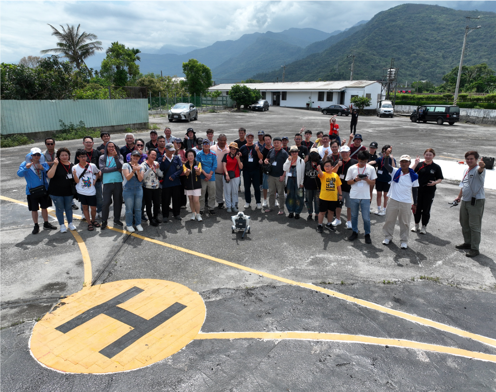
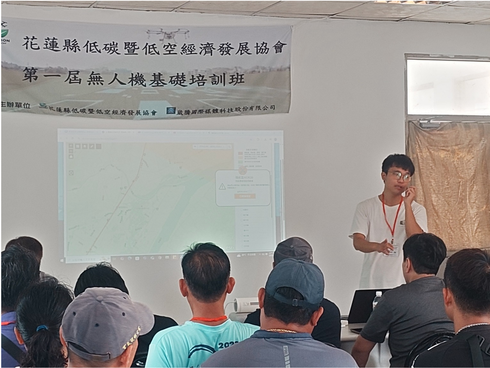
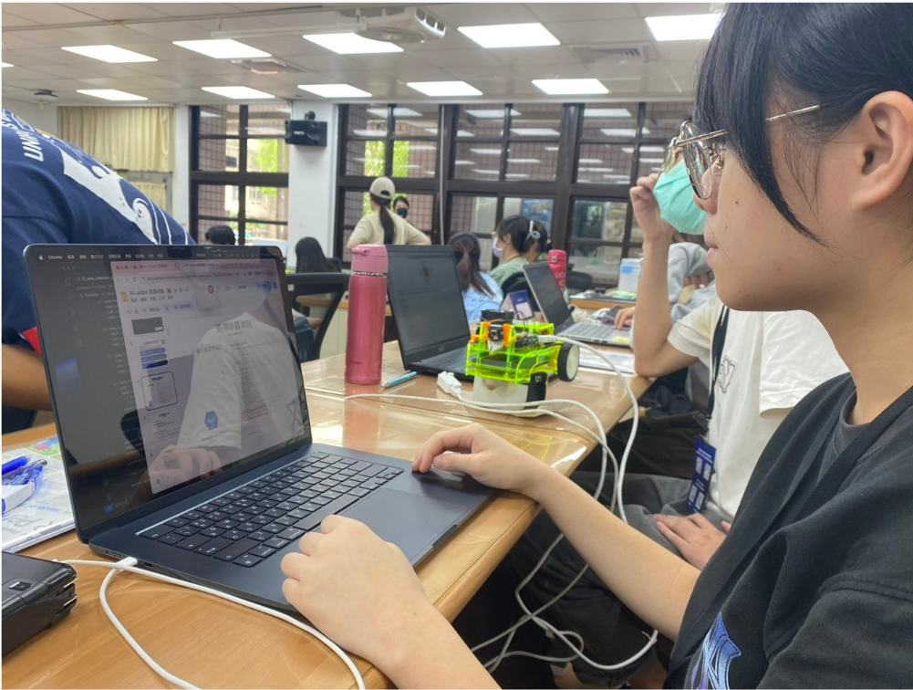
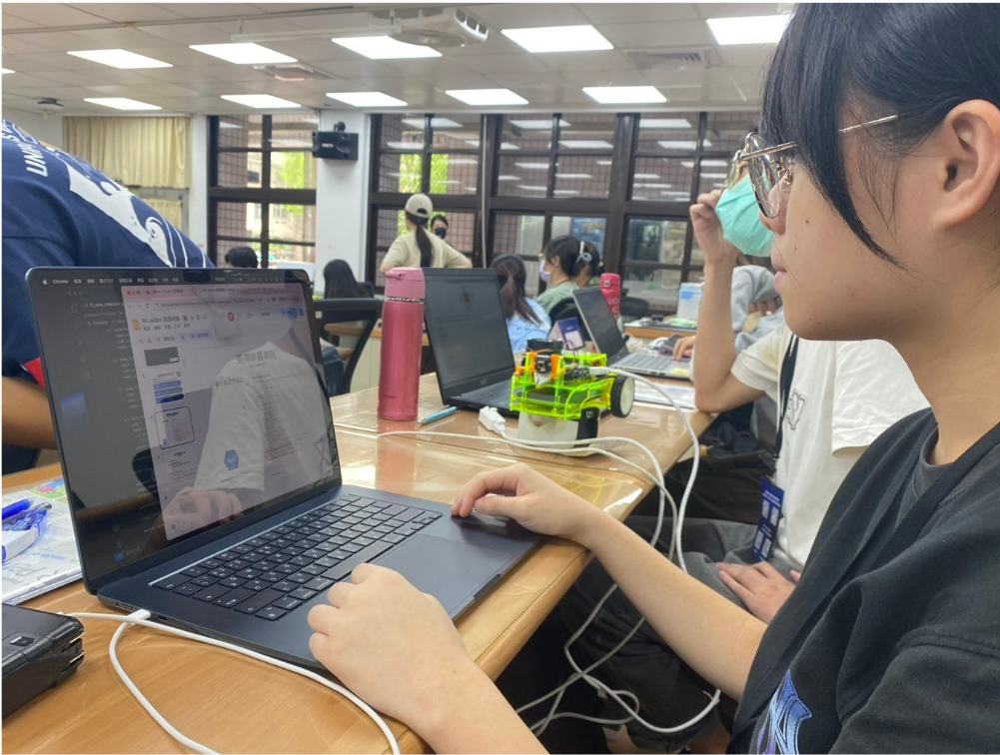
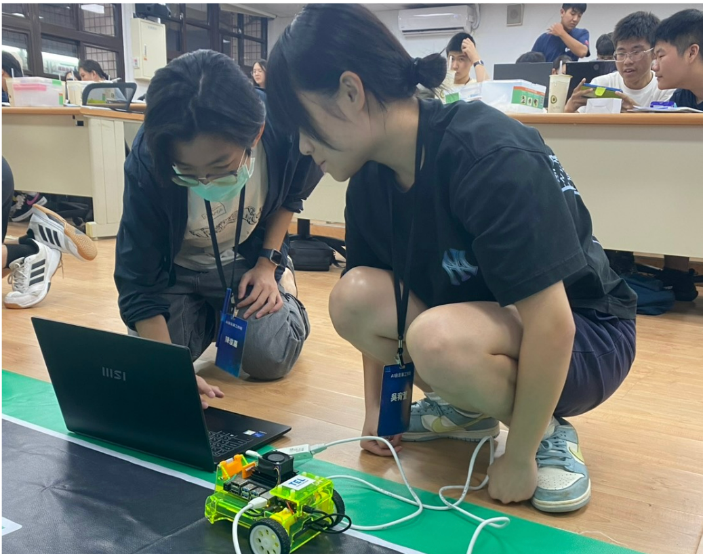
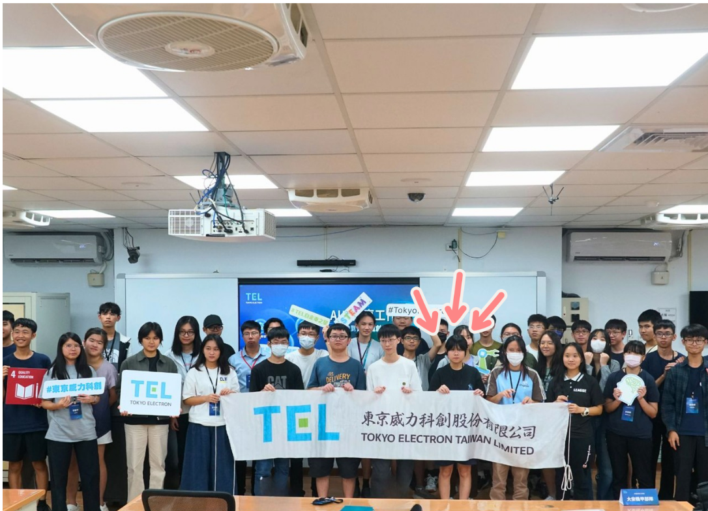
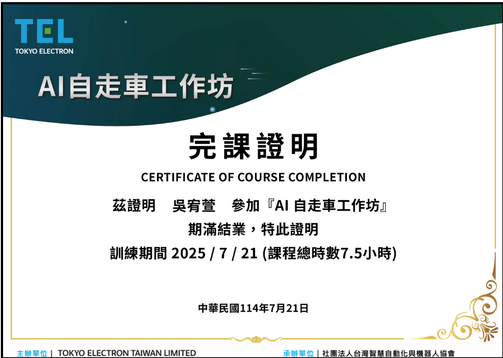

關於我
我是吳宥萱，目前就讀於臺北市立萬芳高中數位學習實驗班，致力於特殊選才。我熱衷於程式設計、機電整合與單簧管演奏，擁有多元的才華與堅毅的性格。
獲獎紀錄－資訊機電類
1. 2025年第二十四屆 旺宏科學獎 電子電機類 佳作
2. 2025年全國AIxSTEM智能照護創新大賽 高中職組 冠軍
3. 2025年全國大專校院暨高中職i-Life競賽 創新創意組 冠軍
4. 2025年全國醫工日創新醫材競賽 高中職創意組 第一名
5. 2025年全國高中職學校 高齡安養小論文競賽 第一名
6. 2025年教育部全國中學生網站小論文寫作比賽 資訊類 優等
7. 2024年臺北市政府STEAM跨域競賽 龍舟競賽類 第二名
獲獎紀錄－單簧管獨奏類
1. 2024年BUFFET CRAMPON 台灣單簧管音樂大賽 複賽
2. 2022年BUFFET CRAMPON 台灣單簧管音樂大賽 決賽
3. 2022年亞太盃國際音樂大賽 單簧管獨奏國中組 第二名
4. 2022年臺北市學生音樂比賽 單簧管獨奏國中組 第二名
5. 2021年台灣卓越盃音樂公開賽 單簧管獨奏國中組 第三名
6. 2020年臺北市文化盃音樂大賽 單簧管獨奏國中組 第一名
7. 2020年台灣卓越盃音樂公開賽 單簧管獨奏國小組 第二名
8. 2019年亞太盃國際音樂大賽 單簧管獨奏國小高年級組 第一名
9. 2019年臺北市文化盃音樂大賽 單簧管獨奏國小高年級組 第五名
專業才能
1. 單簧管演奏
2. 寫程式與機電整合
幹部經歷
1. 高二下：外掃股長
2. 高一下：風紀幹事
3. 高一上：學藝股長
家庭背景與啟發
我的父親是一名業務工作者，母親是藥劑師兼保健食品研發顧問。雖然我是家中唯一的孩子，但父母從不溺愛我。他們長期投入自行車與馬拉松競賽，獲獎無數，並從小帶領我挑戰體能極限，讓我學會不輕言放棄的信念。
母親對我的課業要求嚴格，總是叮囑：「成績不一定要最好，但學習態度必須端正。」這句話深深影響了我，不論是學業還是技藝，我都全力以赴。
從音樂磨出韌性
從小我就對音樂有敏銳的感知，小學一年級加入安坑國小管樂團，開始學習單簧管。經過日復一日的苦練，我成為樂團首席，並在多項全國競賽中獲得佳績，如亞太盃國際音樂大賽冠軍與卓越盃音樂公開賽亞軍。
進入大安國中管樂團後，我挑戰更高難度的降E調單簧管，承擔表演中切換音階的獨奏重任，曾登上國家音樂廳演出，獲得指揮老師的肯定。音樂形塑了我的紀律與堅毅，讓我知道成功沒有捷徑，只有努力。
數位學習實驗班的挑戰與成長
進入數位實驗班
我目前就讀於臺北市立萬芳高中數位學習實驗班，這是一個專注於科技創新與跨域學習的特殊課程。在這裡，我學習了程式設計、機電整合以及各種新興技術的應用，這些課程不僅拓展了我的視野，也讓我確定了未來在電機工程領域發展的目標。
技術能力的提升
在實驗班的學習過程中，我參與了多個專案，學習如何將程式設計與硬體整合，打造具有實際功能的系統。這些實作經驗讓我掌握了實作應用與時間管理的核心技能，也培養了我解決問題的能力。
團隊合作與競賽收穫
實驗班強調團隊合作，我們經常以小組形式參與競賽與專案開發。我在多項全國性比賽中獲得佳績，例如臺北市 STEAM 競賽以及台北市113年度生活科技學藝競賽。這些經歷讓我學會如何與團隊成員分工合作，共同克服挑戰。

無人機基礎培訓研習
我對無人機的興趣始於高一參加北市資通訊應用大賽。雖然未得名，但兩三個月的練習讓我累積基礎操作經驗，也注意到其他學校使用更高階的機種，飛行穩定性更佳，激發我深入探索的動機。因此高二下注意到花蓮有研習活動後，便立即決定參加。課程涵蓋操作原理、GPS導航與空域法規，讓我理解無人機不只是遙控裝置，更能應用於農業巡田與災防監控等領域，開啟我從興趣走向專業應用的第一步。
 
下午的術科練習尤其札實，不僅須操作無人機起降，甚至災情模擬到地貌測繪，操作過程需精準掌控、因應風速與地形調整飛行姿態，在實務中須快速判斷與調整。亦接觸到機器狗的應用展示，了解其於地形踏查與運輸的穩定性。
未來若能在電機系深化感測控制與機電整合技術，我期待能將這份興趣實踐於智慧載具的跨域應用之中。

TEL x AI 自走車工作坊
上午的課程非常適合初次接觸RK-JetBot的學員。透過硬體結構的介紹與基礎操作的實作，我對JetBot的功能有了全面的了解，尤其是透過Jupyter Lab進行遙控操作的部分，非常直觀且有趣。課程中的注意事項，例如程式開發時應該要如何測試及鏡頭模組與開發版的連接方式，讓我更加重視硬體保護。

 
 下午的課程是上午基礎操作的延伸，將JetBot應用於道路辨識的場景中，並學到程式是怎麼辨識地圖、車道。課程中對深度學習流程的詳細講解，讓我對資料收集、模型訓練及應用有了更深的理解。實作部分最令我印象深刻，使用JetBot進行道路辨識並自主導航，其中看到JetBot能夠即時根據道路狀況進行最佳化的過程，讓我感到AI技術的強大。
  